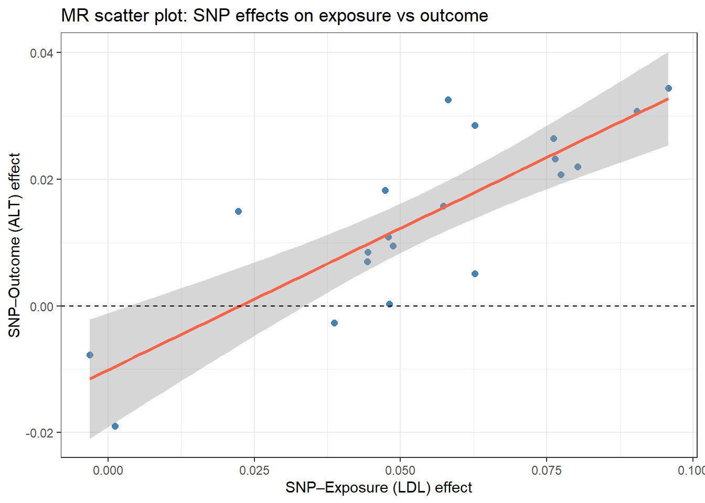

set.seed(2024)
n <- 5000
# Simulate genetic score (standardised polygenic score for LDL)
G <- rbinom(n, 2, 0.3) # 0/1/2 copies of effect allele
# Simulate confounder (BMI) - NOT associated with G (by Mendel's laws)
BMI <- rnorm(n, 25, 4)
# LDL causally affected by G and BMI
LDL <- 0.8 * G + 0.4 * BMI + rnorm(n, 0, 1.5)
# ALT: true causal effect of LDL = 0.3; also affected by BMI (confounder)
ALT <- 0.3 * LDL + 0.5 * BMI + rnorm(n, 0, 2)
sim <- tibble(G, BMI, LDL, ALT)18 Mendelian Randomisation
18.1 When Do You Use This?
You want to know whether high LDL cholesterol causally increases the risk of liver disease. Observational studies are confounded - sick people may both have elevated LDL and worse liver function. An RCT randomising people to high or low LDL is impossible. Mendelian randomisation uses genetic variants that naturally raise LDL as a randomisation instrument: because genotype is assigned at conception, it cannot be confounded by lifestyle or disease state.
18.2 Learning Objectives
After completing this session you will be able to:
- Explain the IV/MR framework and the three core instrument assumptions
- Simulate MR data and estimate a causal effect with the Wald ratio and two-stage least squares (2SLS)
- Apply MR with summary-level GWAS data using the
TwoSampleMRpackage - Interpret MR effect estimates and report them correctly
- Recognise horizontal pleiotropy and apply sensitivity analyses (MR-Egger, weighted median, MR-PRESSO)
18.3 Background: Mendelian Randomisation as an Instrument
18.3.1 The Instrumental Variable Framework
An instrumental variable (IV) \(Z\) satisfies three assumptions:
| Assumption | Condition | How to check |
|---|---|---|
| Relevance | \(Z\) is associated with the exposure \(X\) | F-statistic > 10 in first stage |
| Independence (exchangeability) | \(Z\) is not associated with confounders \(U\) | By Mendel’s laws: genes assigned randomly at meiosis |
| Exclusion restriction | \(Z\) affects the outcome \(Y\) only through \(X\) | Untestable; violated by horizontal pleiotropy |
In MR, the IV is a genetic variant (SNP) associated with the exposure. Because genotype is determined before disease and is largely orthogonal to environmental confounders, it approximates a natural randomisation.
18.3.2 The Wald Ratio Estimator
With a single SNP instrument:
\[\hat{\beta}_{MR} = \frac{\hat{\beta}_{ZY}}{\hat{\beta}_{ZX}}\]
where \(\hat{\beta}_{ZY}\) is the SNP-outcome association and \(\hat{\beta}_{ZX}\) is the SNP-exposure association. Both are obtained from GWAS summary statistics (or individual-level regression in one-sample MR).
18.4 Example 1: Simulated One-Sample MR
We simulate a dataset where LDL causally increases liver enzyme (ALT), with confounding by BMI.
18.4.1 Naive OLS (confounded)
# OLS is biased because BMI confounds LDL-ALT association
fit_ols <- lm(ALT ~ LDL, data = sim)
tidy(fit_ols, conf.int = TRUE) %>% filter(term == "LDL")# A tibble: 1 × 7
term estimate std.error statistic p.value conf.low conf.high
<chr> <dbl> <dbl> <dbl> <dbl> <dbl> <dbl>
1 LDL 0.906 0.0155 58.6 0 0.876 0.937The OLS estimate is inflated because BMI raises both LDL and ALT.
18.4.2 Wald Ratio MR
# First stage: SNP - LDL (relevance check)
fit_z_x <- lm(LDL ~ G, data = sim)
beta_zx <- coef(fit_z_x)["G"]
se_zx <- summary(fit_z_x)$coefficients["G", "Std. Error"]
f_stat <- (beta_zx / se_zx)^2
cat("First-stage F-statistic:", round(f_stat, 1), "\n")First-stage F-statistic: 291.3 # Reduced form: SNP - ALT
fit_z_y <- lm(ALT ~ G, data = sim)
beta_zy <- coef(fit_z_y)["G"]
se_zy <- summary(fit_z_y)$coefficients["G", "Std. Error"]
# Wald ratio
beta_mr <- beta_zy / beta_zx
se_mr <- se_zy / abs(beta_zx) # delta method (approximate)
cat("Wald ratio MR estimate:", round(beta_mr, 3),
"| SE:", round(se_mr, 3),
"| 95% CI: (", round(beta_mr - 1.96 * se_mr, 3), ",",
round(beta_mr + 1.96 * se_mr, 3), ")\n")Wald ratio MR estimate: 0.345 | SE: 0.085 | 95% CI: ( 0.177 , 0.512 )cat("True causal effect: 0.3\n")True causal effect: 0.318.4.3 Two-Stage Least Squares (2SLS)
library(AER) # ivreg()Warning: package 'AER' was built under R version 4.4.3Loading required package: carWarning: package 'car' was built under R version 4.4.1Loading required package: carDataWarning: package 'carData' was built under R version 4.4.1
Attaching package: 'car'The following object is masked from 'package:dplyr':
recodeThe following object is masked from 'package:purrr':
someLoading required package: lmtestWarning: package 'lmtest' was built under R version 4.4.3Loading required package: zooWarning: package 'zoo' was built under R version 4.4.3
Attaching package: 'zoo'The following objects are masked from 'package:base':
as.Date, as.Date.numericLoading required package: sandwichWarning: package 'sandwich' was built under R version 4.4.3Loading required package: survivalWarning: package 'survival' was built under R version 4.4.3fit_iv <- ivreg(ALT ~ LDL | G, data = sim)
tidy(fit_iv, conf.int = TRUE) %>% filter(term == "LDL")# A tibble: 1 × 7
term estimate std.error statistic p.value conf.low conf.high
<chr> <dbl> <dbl> <dbl> <dbl> <dbl> <dbl>
1 LDL 0.345 0.0741 4.65 0.00000339 0.199 0.4902SLS is the multi-instrument generalisation of the Wald ratio. The result should match the Wald ratio when only one instrument is used.
18.5 Example 2: Summary-Level Two-Sample MR
Two-sample MR uses GWAS summary statistics from two independent datasets: - Exposure GWAS: SNP-LDL associations (e.g., from UK Biobank) - Outcome GWAS: SNP-liver disease associations (e.g., FinnGen)
Here we use the TwoSampleMR package to query the MR-Base database.
library(TwoSampleMR)
# Example: LDL - coronary artery disease (publicly available data)
exposure <- extract_instruments("ieu-a-300") # LDL from GLGC GWAS
outcome <- extract_outcome_data(
snps = exposure$SNP,
outcomes = "ieu-a-7" # CAD from CARDIoGRAM
)
dat <- harmonise_data(exposure, outcome)
# Primary MR methods
res <- mr(dat)
res %>% select(method, b, se, pval, lo_ci, up_ci)The output reports: - IVW (inverse-variance weighted): Main estimate — assumes no directional pleiotropy - MR-Egger: Allows for pleiotropy; the intercept tests for it - Weighted median: Consistent estimate if >50% of instruments are valid - MR-PRESSO: Detects and corrects for outlier pleiotropy
18.5.1 Sensitivity Analysis: Pleiotropy
# Simulated scatter plot: SNP effects on exposure vs outcome
set.seed(42)
n_snps <- 20
beta_x <- rnorm(n_snps, 0.05, 0.02) # SNP-LDL effects
beta_y <- 0.3 * beta_x + rnorm(n_snps, 0, 0.008) # SNP-outcome (no pleiotropy)
tibble(beta_x, beta_y) %>%
ggplot(aes(x = beta_x, y = beta_y)) +
geom_point(size = 2, color = "steelblue") +
geom_smooth(method = "lm", se = TRUE, color = "tomato") +
geom_hline(yintercept = 0, linetype = "dashed") +
labs(title = "MR scatter plot: SNP effects on exposure vs outcome",
x = "SNP?Exposure (LDL) effect",
y = "SNP?Outcome (ALT) effect") +
theme_bw()`geom_smooth()` using formula = 'y ~ x'
18.6 Where to Find Data Like This
MR-Base (IEU Open GWAS): TwoSampleMR::available_outcomes() - thousands of GWAS summary datasets freely accessible via the TwoSampleMR package.
UK Biobank GWAS: Downloadable summary statistics for thousands of traits at https://www.ukbiobank.ac.uk.
FinnGen: European biobank GWAS summary data: https://www.finngen.fi.
PhenoScanner: Query SNP associations across thousands of traits: http://www.phenoscanner.medschl.cam.ac.uk.
18.7 What Can Go Wrong
Weak instruments (F < 10) When the SNP explains little variance in the exposure, the Wald ratio becomes unstable (weak instrument bias). Weak instruments bias 2SLS toward the OLS estimate in one-sample MR, and toward the null in two-sample MR. Use multiple SNPs and check F-statistics.
Horizontal pleiotropy The exclusion restriction is violated if the SNP affects the outcome through pathways other than the exposure. MR-Egger, weighted median, and MR-PRESSO test for and partly correct this, but they are not definitive. Biological understanding of the genetic variant is essential.
Winner’s curse in instrument selection Using the same dataset to select instruments and to estimate the causal effect inflates the apparent SNP-exposure association. Always use independent datasets for instrument selection and effect estimation (two-sample design).
Confounding by population stratification If the exposure and outcome GWAS come from populations with different ancestry, SNP effects may differ by ancestry and confound the MR estimate. Use ancestry-matched datasets or multi-ancestry sensitivity analyses.
18.8 Exercises
18.8.1 Exercise 1 (Guided): First-Stage F-Statistic
Using the simulated sim dataset:
- Regress
LDL ~ Gand compute the F-statistic for the instrument. - What is the rule of thumb? Is your instrument strong?
- Now simulate a weak instrument: replace
GwithG_weak <- rbinom(n, 2, 0.05). Recompute the F-statistic. What changes?
TipExercise 1: Solution
fit1 <- lm(LDL ~ G, data = sim)
f <- summary(fit1)$fstatistic["value"]
cat("F-statistic:", round(f, 1), "? strong if > 10\n")F-statistic: 291.3 ? strong if > 10# Weak instrument
G_weak <- rbinom(nrow(sim), 2, 0.05)
LDL_alt <- 0.1 * G_weak + 0.4 * sim$BMI + rnorm(nrow(sim), 0, 1.5)
fit_weak <- lm(LDL_alt ~ G_weak)
cat("Weak instrument F:", round(summary(fit_weak)$fstatistic["value"], 1), "\n")Weak instrument F: 0.2 18.8.2 Exercise 2 (Semi-guided): Horizontal Pleiotropy Check
Extend the simulation to add horizontal pleiotropy: the SNP also directly affects ALT (independent of LDL).
- Simulate
ALT_pleiotropic <- 0.3 * LDL + 0.5 * BMI + 0.4 * G + rnorm(n, 0, 2)(direct SNP effect = 0.4). - Compute the Wald ratio MR estimate. Is it biased?
- Interpret: what would this mean in a real MR study?
TipExercise 2: Solution
ALT_p <- 0.3 * sim$LDL + 0.5 * sim$BMI + 0.4 * sim$G + rnorm(nrow(sim), 0, 2)
# SNP-outcome (includes direct path)
beta_zy_p <- coef(lm(ALT_p ~ sim$G))["sim$G"]
wald_p <- beta_zy_p / beta_zx
cat("True causal effect: 0.3\n")True causal effect: 0.3cat("Wald ratio with pleiotropy:", round(wald_p, 3), "\n")Wald ratio with pleiotropy: 0.773 # Biased upward because SNP -> ALT directly inflates beta_zy18.8.3 Exercise 3 (Open-ended)
Identify a trait relevant to your research that has publicly available GWAS summary data (check MR-Base or GWAS Catalog). Design an MR study:
- State your causal hypothesis (exposure → outcome).
- List the MR assumptions and how they might be violated for your chosen instrument.
- Specify which sensitivity analyses you would run and what conclusions you could draw if they disagree with the IVW result.
18.9 Comprehension Check
- Why does Mendelian randomisation approximate an RCT?
- The F-statistic for your genetic instrument is 7.2. What is the concern, and what should you do?
- MR-Egger gives a non-zero intercept (p = 0.02). What does this mean?
- The IVW MR estimate is 0.4 but the weighted median estimate is 0.1. How should you interpret this discrepancy?
- Your exposure and outcome GWAS come from the same cohort. What problem does this introduce?
NoteAnswers
- Genetic variants are assigned at conception by the random process of meiosis, effectively a natural randomisation that is independent of most environmental confounders, reverse causation (genes precede disease), and confounders that develop over the life course. This mimics the randomised assignment in an RCT, though only for the specific exposure pathway affected by those variants.
- F < 10 indicates a weak instrument. Weak instruments lead to inflated standard errors, low power, and in one-sample MR, bias toward the OLS estimate. Options: add more SNPs to construct a stronger polygenic score, or restrict to SNPs from larger GWAS with better power. Do not proceed with MR if the instrument is too weak.
- A significant MR-Egger intercept means that the SNP effects on the outcome have a direction-dependent offset after regressing on SNP-exposure effects, evidence of directional (systematic) horizontal pleiotropy. The IVW estimate is biased. The MR-Egger slope provides a pleiotropy-corrected estimate, but it is less precise than IVW.
- The IVW assumes all instruments are valid; if some SNPs are pleiotropic, the IVW is biased. The weighted median is consistent if at least 50% of the instrument weight comes from valid SNPs. A large discrepancy (0.4 vs 0.1) suggests substantial pleiotropy. Report all estimates, run MR-PRESSO to identify outlier SNPs, and interpret cautiously. The true causal effect is probably closer to the more conservative weighted-median estimate.
- This is the one-sample overlap problem. When instrument selection and causal estimation use the same dataset, the winner’s curse inflates the apparent instrument strength, and the 2SLS estimate is biased toward the OLS (confounded) estimate in proportion to the instrument’s weakness. A two-sample design - instrument-exposure association from one independent GWAS, instrument-outcome association from another - avoids this.
18.10 How to Report
18.10.1 Reporting Mendelian Randomisation Results
Note
In a methods section: “Two-sample Mendelian randomisation was performed using summary-level GWAS data for [exposure] (source: [citation]) and [outcome] (source: [citation]). The primary analysis used the inverse-variance weighted (IVW) method. Sensitivity analyses included the weighted median, MR-Egger, and weighted mode methods to assess robustness to pleiotropy.”
In results: “Genetically predicted [exposure] was associated with [outcome] (IVW 3b2 = X per SD increase, 95% CI [L, U], p = Y). The MR-Egger intercept was close to zero (intercept = X, p = Z), supporting the no-pleiotropy assumption.”
What to always include:
- IVW estimate with 95% CI and p-value
- Number of genetic instruments used
- Results from at least two sensitivity analyses
- Cochran Q statistic or I² for instrument heterogeneity
- GWAS sources for both exposure and outcome
Avoid causal language: State that findings are “consistent with a causal effect” or “provide evidence supporting causality” rather than claiming causation directly.
18.11 Further Reading
- Smith and Ebrahim (2003) — Mendelian randomization: can genetic epidemiology contribute to understanding environmental determinants of disease? (IJE - the original MR paper)
- Bowden, Smith, and Burgess (2015) — Mendelian Randomization with invalid instruments - MR-Egger paper
TwoSampleMRpackage vignette (MR-Base documentation)- Hemani et al. (2018) — The MR-Base platform supports systematic causal inference across the human phenome (eLife)
Bowden, Jack, George Davey Smith, and Stephen Burgess. 2015. “Mendelian Randomization with Invalid Instruments: Effect Estimation and Bias Detection Through Egger Regression.” International Journal of Epidemiology 44 (2): 512–25.
Hemani, Gibran, Jie Zheng, Benjamin Elsworth, et al. 2018. “The MR-Base Platform Supports Systematic Causal Inference Across the Human Phenome.” eLife 7: e34408.
Smith, George Davey, and Shah Ebrahim. 2003. “’Mendelian Randomization’: Can Genetic Epidemiology Contribute to Understanding Environmental Determinants of Disease?” International Journal of Epidemiology 32 (1): 1–22.